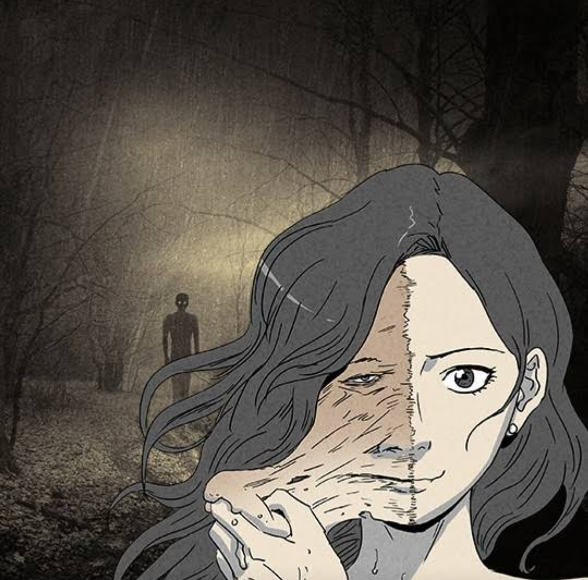

Tales of the Unusual
Sungdae Oh
n dangerous urban legends and dark ancient myths, human instincts and urges take form in unusual ways. Discover strange and thrilling depths in Tales of the Unusual. Often the thing that we should be most afraid of... is ourselves.

9.9M

Zombie Ship
choi hae woong , Choi Insoo
Roberto Hoffman, a Navy SEAL officer, had a loving family and a peaceful life. However, his life takes a sudden turn when zombies appear. After losing his wife and son, Hoffman is only left with his niece, Ara. The two of them hop on the world’s biggest cruise ship, Noah, hoping to find a new land of life.
199,089